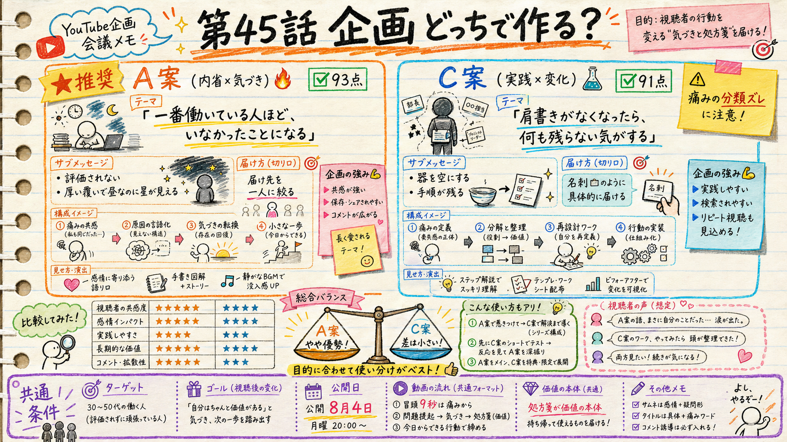

content/065 ／ 公開枠 2026-08-04 04:00 JST（claim済） ／ H58「痛み先頭転換」コホートの3本目。
候補3案を作り、独立採点（制作会話を見ていない別プロセス）で2案に絞り、両方とも90点以上を通過しています。

concept-candidates/*.md。ep43＝限界（頼れない）、ep44＝執着・別れ（赦し）と来たので、痛み分類が重ならない3案を未使用卦20個 × radar未使用の大型IPから作りました。選定はブラインド（どれを誰が書いたか採点者に見せない）で、analytics/eval-schemas/concept.json の5軸。
| 案 | 作品 × 卦 | 痛み分類 | 独立採点 | 結果 |
|---|---|---|---|---|
| A | ワンパンマン（サイタマ）× 豐 #55 | 仕事・評価 | 93 / 97 | 通過 |
| C | Dr.STONE（石神千空）× 鼎 #50 | 決断 | 91 / 95 | 通過 |
| B | 聲の形（西宮硝子）× 巽 #57 | 人間関係 | 89 / 84 | 落選 |
※ 左＝creative-loop の fork独立採点（閾値90）、右＝bon ブラインド比較時の点。いずれも「処方箋がdb本文に接地しているか」のゲートは全案 true。
痛み＝仕事・評価独立採点 93
「一番働いている人ほど、いなかったことになる。」
タイトル案（痛み先頭型）：一番働いている人ほど、いなかったことになる。｜ワンパンマン×豐
送りたくなる一文：いなかったことになっている人が、たぶん一番働いている。
豐＝ABUNDANCE の爻辞が繰り返し描くのは 「覆いが厚いために、真昼なのに星が見える」 という一つの絵です。db本文は三爻でこう言い切ります——「腕を折られたように動けない。だが、それは彼のせいではない（No blame）」。
つまり評価されない理由を、卦のほうが先に「本人の落ち度ではない」と言っている。サイタマは一撃で終わらせてしまうがゆえに、過程が誰にも見えない。この回はサイタマを三爻（覆われて動けない側）に固定して読みます。
「アピールが上手くなること」ではなく「届け先を一人に絞ること」。覆いは自分では外せないので、六爻すべてを届け先の限定の方向で統一しました（初爻＝進捗を流す相手を一人決める／三爻＝動かせなかった事実を一行記録／上爻＝決めた一人に、やったことを一つ渡す）。
「評価されないことが不幸なのではない。評価されないまま、門を閉じることが不幸だ。傲慢で閉じても、諦めで閉じても、閉じた門は同じ形をしている」
同作のキング。サイタマ＝実績はあるが見えない／キング＝見えているが実績が本人のものではない。同じ一つの覆いが、二人に正反対の形で掛かっている。ショートは 豐→旅（55の次が56＝大を窮めた者は居場所を失う）。
痛み＝決断独立採点 91
「肩書きがなくなったら、自分には何も残らない気がする。」
タイトル案（痛み先頭型）：肩書きがなくなったら、自分には何も残らない気がする。｜Dr.STONE×鼎
送りたくなる一文：肩書きを全部はがして残ったものが、その人の中身だ。
鼎＝THE CALDRON は文明の器の卦。db注釈は「井（せい）が生活の土台なら、鼎は文化の上部構造」と言い、初爻は 「鼎を逆さにして、澱んだものを出す」——作り直しは足し算ではなく、器を空にするところから始まる。
千空が石化後にやったのは知識の暗唱ではなく、知識を「再現可能な手順」と「人に配れる役割」へ変えて器を組み直すこと。鼎は器だけでなく助け手と継承（五爻・上爻）まで含む卦で、「一人で持つ器」から「人が担げる器」への移りが物語と重なります。
初爻＝「いまの肩書きが無ければ成立しない前提を一つ特定し、今週はその前提を使わずに一件やる」／四爻＝「役目に対して足りていない一点を、名指しで助けを頼む」／上爻＝「自分の手順を一人に、順番どおり書いて渡す（結論だけ言わない）」。
「肩書きが消えることが怖いのではない。肩書きを捨てたら何も残らないと、自分がいちばん先に知っていることが怖いのだ」
creative-loop reject へ流して採点表に還流します。却下からしか"刺さったか"は学べないので、直す前に必ず記録します）。